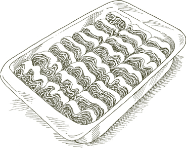
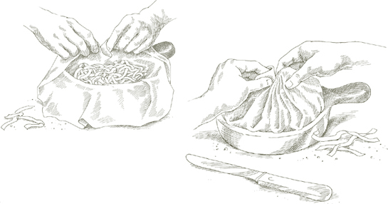

If you are not acquainted with cranberry beans, please see the explanation that accompanies Pasta and Bean Soup.
If you are not acquainted with cranberry beans, please see the explanation that accompanies Pasta and Bean Soup.IN THE ANCIENT stonecutters’ town of San Giorgio, high in the hills of Valpolicella, north of Verona, the cooking skills of the Dalla Rosa family have been celebrated by townspeople and visitors for at least four generations. One of the dishes for which people now trek to their trattoria is pasta sauced with one of the fundamental elements of cooking in the Veneto, cranberry beans. Cranberry beans are essential to pasta e fagioli but no one, before some unidentified and forgotten Dalla Rosa, had put them to such delicious use with pasta.
According to Lodovico Dalla Rosa, the word embogoné comes from the dialect word for snails, bogoni. He surmised that the beans as they turn to sauce in the skillet, in their roundness and slow motion, must have reminded the originator of the dish of snails that had slipped out of their shells.
Note If you are not acquainted with cranberry beans, please see the explanation that accompanies Pasta and Bean Soup.
For 4 servings
3 pounds fresh cranberry beans, unshelled weight, OR 1½ cups dried cranberry OR red kidney beans, soaked and cooked
Extra virgin olive oil, 1 tablespoon for the sauce, 2 tablespoons for tossing the pasta
¼ pound pancetta chopped very fine to a pulp
⅔ cup onion chopped fine
1 teaspoon garlic chopped fine
Chopped sage leaves, 1 teaspoon if fresh, ½ teaspoon if dried
Chopped rosemary, 1 teaspoon if fresh, ½ teaspoon if dried
Salt
Black pepper, ground fresh from the mill
The fresh pappardelle suggested below OR 1 pound boxed dry pasta
½ cup freshly grated parmigiano-reggiano cheese, plus additional cheese at the table
Recommended pasta Pappardelle, broad homemade egg noodles, is what the Trattoria Dalla Rosa serves this sauce on, and I don’t see how one could improve on the taste of this large noodle wrapped around the substantial bean sauce. Make pappardelle, using a dough made from 3 large eggs and approximately 1⅔ cups unbleached flour.
A substantial shape of boxed, dry, factory pasta would also be a good choice. Try rigatoni.
1. If using fresh beans, put them in a pot with 2 inches of water to cover. Cover the pot, turn on the heat to low, and cook until tender, about 1 hour or less.
2. Put 1 tablespoon of olive oil, the chopped pancetta, and the onion in a sauté pan and turn on the heat to medium high. Cook, stirring occasionally, until the onion becomes translucent. Add the garlic, sage, and rosemary and cook another minute or so, then turn the heat down to minimum.
3. Drain the cooked fresh or dried beans, reserving their cooking liquid. Put the beans in the pan and mash most of them—about three-fourths the total amount—with the back of a wooden spoon. Add about ½ cup of the bean cooking liquid to the pan to make the sauce somewhat runnier. Add salt and several grindings of pepper, and stir thoroughly.
4. Drain the pasta the moment it’s cooked and toss it immediately in a warm serving bowl with the contents of the pan; add the remaining 2 tablespoons of olive oil, sprinkle with freshly grated Parmesan, toss once more, and serve at once. If you should find the sauce too dense, thin it with a little more of the bean cooking liquid.
For 4 to 6 servings
1½ pounds fresh asparagus
Salt
1 to 1¼ pounds pasta
6 ounces boiled unsmoked ham
2 tablespoons butter
1 cup heavy whipping cream
⅔ cup freshly grated parmigiano-reggiano cheese, plus additional cheese at the table
Recommended pasta Small, tubular macaroni are the most compatible with this sauce. Use such boxed, dry pasta shapes as penne, maccheroncini, or ziti, or the homemade garganelli.
1. Cut off 1 inch or more from the butt ends of the asparagus to expose the moist part of each stalk. Pare the asparagus and wash it.
2. Choose a pan that can accommodate all the asparagus lying flat. Put in enough water to come 2 inches up the sides of the pan, and 1 tablespoon salt. Turn on the heat to medium high and when the water boils, slip in the asparagus, and cover the pan. Cook for 4 to 8 minutes after the water returns to a boil, depending on the freshness and thickness of the stalks. Drain the asparagus when it is tender, but firm. Wipe the pan dry with paper towels and set aside for later use.
3. When the asparagus is cool enough to handle, cut off the spear tips at their base, and cut the rest of the stalks into lengths of about ¾ inch. Discard any part of the stalk that is still woody and tough.
4. Cut the ham into long strips about ¼ inch wide. Put the ham and the butter into the pan where you cooked the asparagus, turn on the heat to medium low, and cook for 2 to 3 minutes without letting the ham become crisp.
5. Add the cut-up asparagus spear tips and stalks, turn up the heat to medium high, and cook for 1 to 2 minutes, turning all the asparagus pieces in the butter to coat them well.
6. Add the cream, turn the heat down to medium, and cook, stirring constantly, for about half a minute, until the cream thickens. Taste and correct for salt.
7. Turn out the entire contents of the pan over cooked and drained pasta, toss thoroughly, add the ⅔ cup grated Parmesan, toss again, and serve at once, with additional grated cheese on the side.
For 4 servings
½ pound sweet sausage containing no fennel seed, chili pepper, or other strong seasonings
1½ tablespoons chopped onion
2 tablespoons butter
1 tablespoon vegetable oil
Black pepper, ground fresh from the mill
⅔ cup heavy whipping cream
Salt
1 pound pasta
Freshly grated parmigiano-reggiano cheese at the table
Recommended pasta In Bologna, where this sauce is popular, they use it on thin, curved, tubular macaroni called “crab grass,” or gramigna. It is a perfect sauce for those shapes of pasta whose twists or cavities can trap little morsels of sausage and cream. Conchiglie and fusilli are the best examples.
1. Skin the sausage and crumble it as fine as possible.
2. Put the chopped onion, butter, and vegetable oil in a small saucepan, turn the heat on to medium, and cook until the onion becomes colored a pale gold. Add the crumbled sausage and cook for 10 minutes. Add a few grindings of pepper and all the cream, turn the heat up to medium high, and cook until the cream has thickened, stirring once or twice. Taste and correct for salt.
3. Toss the sauce with cooked drained pasta and serve at once with grated Parmesan on the side.
For 4 servings
¼ pound sliced prosciutto OR country ham
3 tablespoons butter
½ cup heavy whipping cream
1 pound pasta
¼ cup freshly grated parmigiano-reggiano cheese, plus additional cheese at the table
Recommended pasta The sauce works equally well with homemade fettuccine or tonnarelli, or with green tortellini, and with short, tubular macaroni such as penne or rigatoni.
1. Shred the prosciutto or ham into narrow strips. Put it into a saucepan with the butter, turn on the heat to medium, and cook it for about 2 minutes, turning it from time to time, until it is browned all over.
2. Add the heavy cream and cook, stirring frequently, until you have thickened and reduced it by at least one-third.
3. Toss the sauce with cooked drained pasta, add the ¼ cup grated Parmesan, toss again, and serve at once with additional grated cheese on the side.
AN ITALIAN food historian claims that during the last days of World War II, American soldiers in Rome who had made friends with local families would bring them eggs and bacon and ask them to turn them into a pasta sauce. The historian notwithstanding, how those classic American ingredients, bacon and eggs, came to be transformed into carbonara has not really been established, but there is no doubting the earthy flavor of the sauce: It is unmistakably Roman.
Most versions of carbonara use bacon smoked in the American style, but in Rome one can sometimes have the sauce without any bacon at all, but with salted pork jowl in its place. It is so much sweeter than bacon, whose smoky accents tend to weary the palate. Pork jowl is hard to get outside Italy, but in its place one can use pancetta, which supplies comparably rounded and mellow flavor. You can make the sauce either way, with bacon or pancetta, and you could try both methods to see which satisfies you more.
For 6 servings
½ pound pancetta, cut as a single ½-inch-thick slice, OR its equivalent in good slab bacon
4 garlic cloves
3 tablespoons extra virgin olive oil
¼ cup dry white wine
2 large eggs (see warning about salmonella poisoning)
¼ cup freshly grated romano cheese
½ cup freshly grated parmigiano-reggiano cheese
Black pepper, ground fresh from the mill
2 tablespoons chopped parsley
1¼ pounds pasta
Recommended pasta It is difficult to imagine serving carbonara on anything but spaghetti.
1. Cut the pancetta or slab bacon into strips not quite ¼ inch wide.
2. Lightly mash the garlic with a knife handle, enough to split it and loosen the skin, which you will discard. Put the garlic and olive oil into a small sauté pan and turn on the heat to medium high. Sauté until the garlic becomes colored a deep gold, and remove and discard it.
3. Put the strips of pancetta or bacon into the pan, and cook until they just begin to be crisp at the edges. Add the wine, let it bubble away for 1 or 2 minutes, then turn off the heat.
4. Break the 2 eggs into the serving bowl in which you’ll be subsequently tossing the pasta. Beat them lightly with a fork, then add the two grated cheeses, a liberal grinding of pepper, and the chopped parsley. Mix thoroughly.
5. Add cooked drained spaghetti to the bowl, and toss rapidly, coating the strands well.
6. Briefly reheat the pancetta or bacon over high heat, turn out the entire contents of the pan into the bowl, toss thoroughly again, and serve at once.
Ragù, as the Bolognese call their celebrated meat sauce, is characterized by mellow, gentle, comfortable flavor that any cook can achieve by being careful about a few basic points:
• The meat should not be from too lean a cut; the more marbled it is, the sweeter the ragù will be. The most desirable cut of beef is the neck portion of the chuck.
• Add salt immediately when sautéing the meat to extract its juices for the subsequent benefit of the sauce.
• Cook the meat in milk before adding wine and tomatoes to protect it from the acidic bite of the latter.
• Do not use a demiglace or other concentrates that tip the balance of flavors toward harshness.
• Use a pot that retains heat. Earthenware is preferred in Bologna and by most cooks in Emilia-Romagna, but enameled cast-iron pans or a pot whose heavy bottom is composed of layers of steel alloys are fully satisfactory.
• Cook, uncovered, at the merest simmer for a long, long time; no less than 3 hours is necessary, more is better.
2 heaping cups, for about 6 servings and 1½ pounds pasta
1 tablespoon vegetable oil
3 tablespoons butter plus 1 tablespoon for tossing the pasta
½ cup chopped onion
⅔ cup chopped celery
⅔ cup chopped carrot
¾ pound ground beef chuck (see prefatory note above)
Salt
Black pepper, ground fresh from the mill
1 cup whole milk
Whole nutmeg
1 cup dry white wine
1½ cups canned imported Italian plum tomatoes, cut up, with their juice
1¼ to 1½ pounds pasta
Freshly grated parmigiano-reggiano cheese at the table
Recommended pasta There is no more perfect union in all gastronomy than the marriage of Bolognese ragù with homemade Bolognese tagliatelle. Equally classic is Baked Green Lasagne with Meat Sauce, Bolognese Style. Ragù is delicious with tortellini, and irreproachable with such boxed, dry pasta as rigatoni, conchiglie, or fusilli. Curiously, considering the popularity of the dish in the United Kingdom and countries of the Commonwealth, meat sauce in Bologna is never served over spaghetti.
1. Put the oil, butter, and chopped onion in the pot, and turn the heat on to medium. Cook and stir the onion until it has become translucent, then add the chopped celery and carrot. Cook for about 2 minutes, stirring the vegetables to coat them well.
2. Add the ground beef, a large pinch of salt, and a few grindings of pepper. Crumble the meat with a fork, stir well, and cook until the beef has lost its raw, red color.
3. Add the milk and let it simmer gently, stirring frequently, until it has bubbled away completely. Add a tiny grating—about ⅛ teaspoon—of nutmeg, and stir.
4. Add the wine, let it simmer until it has evaporated, then add the tomatoes and stir thoroughly to coat all ingredients well. When the tomatoes begin to bubble, turn the heat down so that the sauce cooks at the laziest of simmers, with just an intermittent bubble breaking through to the surface. Cook, uncovered, for 3 hours or more, stirring from time to time. While the sauce is cooking, you are likely to find that it begins to dry out and the fat separates from the meat. To keep it from sticking, continue the cooking, adding ½ cup of water whenever necessary. At the end, however, no water at all must be left and the fat must separate from the sauce. Taste and correct for salt.
5. Toss with cooked drained pasta, adding the tablespoon of butter, and serve with freshly grated Parmesan on the side.
Ahead-of-time note If you cannot watch the sauce for a 3- to 4-hour stretch, you can turn off the heat whenever you need to leave, and resume cooking later on, as long as you complete the sauce within the same day. Once done, you can refrigerate the sauce in a tightly sealed container for 3 days, or you can freeze it. Before tossing with pasta, reheat it, letting it simmer for 15 minutes and stirring it once or twice.
Pork is an important part of Bologna’s culture, its economy, and the cuisine, and many cooks add some pork to make their ragù tastier. Use 1 part ground pork, preferably from the neck or Boston butt, to 2 parts beef, and make the meat sauce exactly as described in the basic recipe above.
For 4 to 6 servings
½ pound fresh chicken livers
2 tablespoons chopped shallot OR onion
1 tablespoon vegetable oil
2 tablespoons butter
¼ teaspoon garlic chopped very fine
3 tablespoons diced pancetta OR prosciutto
4 to 5 whole sage leaves
¼ pound ground beef chuck
Salt
Black pepper, ground fresh from the mill
1 teaspoon tomato paste, dissolved in ¼ cup dry white vermouth
1¼ pounds homemade pasta
Freshly grated parmigiano-reggiano cheese at the table
Recommended pasta Here we have a magnificent sauce for pappardelle, the eye- and mouth-filling homemade broad noodles. It can also be combined with the Molded Parmesan Risotto with Chicken Liver Sauce.
1. Remove any greenish spots and particles of fat from the chicken livers, rinse them in cold water, cut each liver into 3 or 4 pieces, and pat them thoroughly dry with paper towels.
2. Put the shallot or onion in a saucepan or small sauté pan together with the oil and butter; turn on the heat to medium. Cook and stir the shallot or onion until it becomes translucent. Add the chopped garlic and cook it briefly, not long enough to become colored, then add the diced pancetta or prosciutto, and the sage. Stir well, cooking for about a minute or less, then add the ground beef, a large pinch of salt, and a few grindings of pepper. Crumble the meat with a fork and cook it until it has lost its raw, red color.
3. Add the cut-up chicken livers, turn the heat up to medium high, stir thoroughly, and cook briefly, just until the livers have lost their raw, red color.
4. Add the tomato paste and vermouth mixture, and cook for 5 to 8 minutes, stirring from time to time. Taste and correct for salt.
5. Turn out the entire contents of the pan over cooked drained pasta, toss well, coating all the strands, and serve at once with grated Parmesan on the side.
 Special Pasta Dishes
Special Pasta Dishes 
About 200 tortellini
FOR THE STUFFING
¼ pound pork, preferably from the neck OR Boston butt
6 ounces boned, skinless chicken breast
2 tablespoons butter
Salt
Black pepper, ground fresh from the mill
3 tablespoons mortadella chopped very fine
1¼ cups fresh ricotta
1 egg yolk
1 cup freshly grated parmigiano-reggiano cheese
Whole nutmeg
Homemade yellow pasta dough, made as directed by the machine method, OR by the hand-rolled method, using 4 large eggs, approximately 2 cups unbleached flour, and 1 tablespoon milk
Recommended sauce The traditional way of serving tortellini is in broth, calculating about 2½ quarts homemade meat broth for cooking and serving 100 tortellini, approximately 6 portions. Not as traditional, but very good all the same is Cream and Butter Sauce, or Tomato Sauce with Heavy Cream, or Bolognese Meat Sauce. Calculate about 2 dozen tortellini per person when serving them with sauce. In all the above instances, serve with grated Parmesan.
1. Dice the pork and the boned, skinless chicken breast into ½-inch cubes.
2. Put the butter in a skillet and turn on the heat to medium. When the butter foam begins to subside, add the cubed pork, one or two pinches of salt, and a few grindings of pepper. Cook for 6 or 7 minutes, turning it to brown it evenly on all sides. Using a slotted spoon, remove it from the skillet and set aside to cool.
3. Add the chicken pieces to the skillet with a pinch of salt and a few grindings of pepper. Brown the chicken on all sides, cooking it about 2 minutes. Remove it from the skillet with a slotted spoon and set aside to cool with the pork.
4. When cool enough to handle, chop the pork and chicken together to a grainy, slightly coarse consistency. It is all right to use the food processor, but do not reduce the meat to a pulp.
5. Put the chopped meat in a bowl and add the mortadella, ricotta, egg yolk, grated Parmesan, and a tiny grating—about ⅛ teaspoon—of nutmeg. Mix thoroughly until all ingredients are evenly amalgamated. Taste and correct for salt.
6. Make yellow pasta dough by the machine method, or by the hand-rolled method. Cut it into tortellini, and stuff them with the above mixture. When boiling the pasta, add 1 tablespoon olive oil to the water.

About 130 tortellini, 5 to 6 servings
FOR THE STUFFING
¼ pound pork, preferably from the neck OR Boston butt
¼ pound veal shoulder
1 tablespoon butter
Salt
Black pepper, ground fresh from the mill
1 tablespoon mortadella chopped very fine
½ cup fresh ricotta
⅓ cup freshly grated parmigiano-reggiano cheese
1 egg yolk
Whole nutmeg
FOR THE PASTA
Homemade green pasta dough, made by the machine method, OR by the hand-rolled method, using 2 large eggs, ⅓ package frozen leaf spinach OR 6 ounces fresh spinach, salt, approximately 1½ cups unbleached flour, and 1 tablespoon milk
Recommended sauce Prosciutto and Cream Sauce; Cream and Butter Sauce; Tomato Sauce with Heavy Cream. Always serve with grated Parmesan.
1. Cut the pork and veal into thin slices, then into 1-inch pieces more or less square. Keep the two meats separate.
2. Put the butter and pork in a small skillet, and turn on the heat to medium low. Cook for 5 minutes, browning the meat on both sides and turning it frequently.
3. Add the veal, and cook it for 1½ minutes or less, browning it on both sides. Add salt, a few grindings of pepper, stir thoroughly to coat well, then remove all the meat from the pan, using a slotted spoon so that all the fat remains behind.
4. When cool enough to handle, chop the pork and veal together to a grainy, slightly coarse consistency. It is all right to use the food processor, but do not reduce the meat to a pulp.
5. Put the chopped meat in a bowl, and add the mortadella, ricotta, grated cheese, egg yolk, and a tiny grating—about ⅛ teaspoon—of nutmeg. Mix thoroughly until all ingredients are evenly amalgamated. Taste and correct for salt and pepper.
6. Make green pasta dough by the machine method, or by the hand-rolled method. Cut it, stuff it with the above mixture, and shape it into tortellini. When boiling the pasta, add 1 tablespoon olive oil to the water.
About 140 tortellini, 6 servings
FOR THE STUFFING
1 small onion
1 medium carrot
1 small celery stalk
A 1-pound piece of fish, in a single slice if possible, preferably sea bass, OR other fish with comparable delicate flavor and juicy flesh
2 tablespoons wine vinegar
Salt
2 egg yolks
3 tablespoons freshly grated parmigiano-reggiano cheese
⅛ teaspoon dried marjoram OR a few fresh leaves
Whole nutmeg
Black pepper, ground fresh from the mill
2 tablespoons heavy whipping cream
FOR THE PASTA
Homemade yellow pasta dough, made by the machine method, OR by the hand-rolled method, using 3 large eggs, approximately 1⅔ cups unbleached flour, and 1 tablespoon milk
Recommended sauce Pink Shrimp Sauce with Cream, or Tomato Sauce with Heavy Cream. You can serve it with or without grated cheese.
1. Peel the onion and carrot, and rinse the carrot and celery under cold water.
2. Put enough water in a pan to cover the fish at a later point. Add the onion, carrot, and celery, and bring to a boil.
3. Add the fish, vinegar, and salt, and cover the pan. When the water returns to a boil, adjust the heat so that the fish cooks at a gentle, steady simmer. Cook about 8 minutes, depending on the thickness of the fish.
4. Using a slotted spoon or spatula, transfer the fish to a platter. Remove the skin, any gelatinous matter, the center bone, and carefully pick out all the small bones you may find. Do not be concerned about keeping the piece of fish whole, because you will shortly have to break it up for the stuffing.
5. Put the fish in a bowl and mash it with a fork. Add the egg yolks, grated Parmesan, marjoram, a tiny grating—about ⅛ teaspoon—of nutmeg, just a few grindings of pepper, and the heavy cream. Mix all ingredients with a fork until they are evenly amalgamated. Taste and correct for salt.
6. Make yellow pasta dough by the machine method, or by the hand-rolled method. Cut it, stuff it with the fish mixture, and shape it into tortellini. When boiling the pasta, add 1 tablespoon olive oil to the water.
About 140 tortelli, 6 servings
FOR THE STUFFING
½ cup chopped parsley
1 ½ cups fresh ricotta
1 cup freshly grated parmigiano-reggiano cheese
Salt
1 egg yolk
Whole nutmeg
FOR THE PASTA
Homemade yellow pasta dough, made by the machine method, OR by the hand-rolled method, using 3 large eggs, 1⅔ cups unbleached flour, and 1 tablespoon milk
Recommended sauce First choice goes to the Cream and Butter Sauce, second to Tomato Sauce with Heavy Cream. Serve with grated Parmesan.
1. Put the parsley, ricotta, grated Parmesan, salt, egg yolk, and a tiny grating—about ¼ teaspoon—of nutmeg into a bowl and mix with a fork until all ingredients are evenly combined. Taste and correct for salt.
2. Make yellow pasta dough by the machine method, or by the hand-rolled method. Cut it for square tortelli with 2-inch sides, and stuff with the ricotta and parsley mixture. When boiling the pasta, add 1 tablespoon of olive oil to the water.
About 140 tortelloni, 6 servings
FOR THE STUFFING
2 pounds Swiss chard, if the stalks are very thin, OR 2½ pounds, if the stalks are broad, OR 2 pounds fresh spinach
Salt
2½ tablespoons onion chopped very fine
3½ tablespoons chopped prosciutto OR pancetta OR unsmoked boiled ham
3 tablespoons butter
1 cup fresh ricotta
1 egg yolk
⅔ cup freshly grated parmigiano-reggiano cheese
Whole nutmeg
FOR THE PASTA
Homemade yellow pasta dough, made by the machine method, OR by the hand-rolled method, using 3 large eggs, approximately 1⅔ cups unbleached flour, and 1 tablespoon milk
Recommended sauce Butter and Sage Sauce, Butter and Parmesan Cheese Sauce, or Tomato Sauce with Heavy Cream. Serve with grated Parmesan.
1. Pull the Swiss chard leaves from the stalks, or the spinach from its stems, and discard any bruised, wilted, or discolored leaves. If you have a mature chard with large, white stalks, save the stalks and use them in Swiss Chard Stalks Gratinéed with Parmesan Cheese. Soak the leaves in a basin of cold water, lifting out the chard and changing the water several times, until there is no trace of soil at the bottom of the basin.
2. Gently scoop up the leaves without shaking them and put them in a pot with just the water that clings to them. Add large pinches of salt to keep the vegetable green, cover the pot, turn on the heat to medium, and cook until tender, about 12 minutes or so, depending on the freshness of the chard or spinach. Drain, and as soon as it is cool enough to handle, squeeze it gently to drive out as much moisture as possible, and chop it very fine.
3. In a small sauté pan put the onion, prosciutto, and butter and turn on the heat to medium. Cook, stirring, until the onion becomes translucent, then add the chopped chard or spinach. Cook for 2 to 3 minutes, until all the butter has been absorbed.
4. Turn out all the contents of the pan into a bowl. Add the ricotta, egg yolk, grated Parmesan, and a tiny grating—about ⅛ teaspoon—of nutmeg, and mix with a fork until all ingredients have been evenly combined. Taste and correct for salt.
5. Make yellow pasta dough by the machine method, or by the hand-rolled method. Cut it for square tortelloni with 2-inch sides, and stuff them with the vegetable mixture. When boiling the pasta, add 1 tablespoon of olive oil to the water.
WHEN YOU SAY cappellacci in Italy, it is understood you are talking about a square pasta dumpling with a furtively sweet pumpkin-based filling. It is a specialty of the northeastern section of Emilia-Romagna, in particular of the city of Ferrara.
The pumpkin used there, known as zucca barucca, is sweet and juicy with a satiny flesh. It has no equivalent among other squashes. When I first set down the recipe in The Classic Italian Cook Book, I found that I could most closely recreate the filling in North America not with any of the local pumpkin varieties, none of which is comparable in flavor and texture to zucca barucca, but by using sweet potato instead.
You must choose the right kind of sweet potato: Not the one with the pale, grayish yellow skin, but the dark-skinned one with a reddish-orange flesh, sometimes mistakenly called a yam. When cooked, it is lusciously sweet and moist, quite as good for cappellacci as the best zucca barucca.
About 140 cappellacci, 6 servings
FOR THE PASTA
Homemade yellow pasta dough, made by the machine method, OR by the hand-rolled method, using 3 large eggs, approximately 1⅔ cups unbleached flour, and 1 tablespoon milk
Recommended sauce Butter and Parmesan Cheese Sauce, or Cream and Butter Sauce. Serve with grated Parmesan.
1. Preheat oven to 450°.
2. Bake the potatoes in the middle level of the hot oven. After 20 minutes turn the thermostat down to 400° and cook for another 35 to 40 minutes, until the potatoes are very tender when prodded with a fork.
3. Turn off the oven. Remove the potatoes and split them in half lengthwise. Return the potatoes to the oven, cut side facing up, leaving the oven door slightly ajar. Remove after 10 minutes, when they will have dried out some.
4. Reduce the amaretti cookies to a powder using the food processor or a pestle and mortar.
5. Peel the potatoes and purée them through a food mill into a bowl. Add the powdered cookies, egg yolk, prosciutto, grated Parmesan, parsley, a tiny grating—about ⅛ teaspoon—of nutmeg, and salt. Mix with a fork until all ingredients are evenly combined.
6. Make yellow pasta dough by the machine method, or by the hand-rolled method. Cut it for square ravioli with 2-inch sides, and stuff them with the sweet potato mixture. When boiling the pasta, add 1 tablespoon of olive oil to the water.
For 6 servings
Salt
A medium-thick Béchamel Sauce, using 2 cups milk, 4 tablespoons (½ stick) butter, 3 tablespoons flour, and ¼ teaspoon salt
6 tablespoons freshly grated parmigiano-reggiano cheese
An oven-to-table ceramic baking dish
Butter for smearing and dotting the dish
1. Preheat oven to 400°.
2. Cook the rigatoni in abundant, boiling salted water. Drain when exceptionally firm, a shade less cooked than al dente because it will undergo additional cooking in the oven. Transfer to a mixing bowl.
3. Add the meat sauce, béchamel, and 4 tablespoons grated Parmesan to the pasta. Toss thoroughly to coat the pasta well and distribute the sauces uniformly.
4. Lightly smear the baking dish with butter. Put in the entire contents of the bowl, leveling it with a spatula. Top with 2 tablespoons grated Parmesan and dot with butter. Put the dish on the uppermost rack of the preheated oven and bake for 10 minutes, until a little bit of a crust forms on top. After taking it out of the oven, allow the rigatoni to settle for a few minutes before bringing to the table.
Properly made lasagne consists of several layers of delicate, nearly weightless pasta spaced by layers of savory, but not overbearing filling made of meat or artichokes or mushrooms or other fine mixtures. The only pasta suitable for lasagne is paper-thin dough freshly made at home. If you have not mastered rolling out pasta by hand, the machine method does a fully satisfactory job with nearly no effort.
It might take a little more time to run pasta dough through a machine than to go to the market and buy a box of the ready-made kind, but there is nothing packed in a box that can lead to the flavor of the lasagne you can produce in your kitchen. Using clunky, store-bought lasagne may save a little time, but you will be sadly shortchanged by the results.
For 6 servings
Bolognese Meat Sauce, the full amount
Béchamel Sauce, using 3 cups milk, 6 tablespoons butter, 4½ tablespoons flour, and ¼ teaspoon salt
Homemade green pasta dough, made by the machine method, OR by the hand-rolled method, using 2 large eggs, ⅓ package frozen leaf spinach OR 6 ounces fresh spinach, salt, and approximately 1½ cups unbleached flour
1 tablespoon salt
2 tablespoons butter plus more for greasing a 9- by 12-inch bake-and-serve lasagne pan, no less than
2½ inches high ⅔ cup freshly grated parmigiano-reggiano cheese
1. Prepare the meat sauce and set aside or, if using sauce you’ve previously frozen, thaw about 2½ cups, reheat gently and set aside.
2. Prepare the béchamel, keeping it rather runny, somewhat like sour cream. When done, keep it warm in the upper half of a double boiler, with the heat turned to very low. If a film should form on top, just stir it when you are ready to use it.
3. Make green pasta dough either by the machine method, or by the hand-rolled method. Roll it out as thin as it will come by either method. If making the dough by machine, leave the strips as wide as they come from the rollers, and cut them into 10-inch lengths. If making it by hand, cut the pasta into rectangles 4½ inches wide and 10 inches long.
4. Set a bowl of cold water near the range, and lay some clean, dry cloth towels flat on a work counter. Bring 4 quarts of water to a rapid boil, add 1 tablespoon salt, and as the water returns to a boil, slip in 4 or 5 of the cut pasta strips. Cook very briefly, just seconds after the water returns to a boil after you dropped in the pasta. Retrieve the strips with a colander scoop or slotted spatula, and plunge them into the bowl of cold water. Pick up the strips, one at a time, rinse them under cold running water, and rub them delicately, as though you were doing fine hand laundry. Squeeze each strip very gently in your hands, then spread it flat on the towel to dry. When all the pasta is cooked in this manner, 4 or 5 strips at a time, and spread out to dry, pat it dry on top with another towel.
Explanatory note The washing, wringing, and drying of pasta for lasagne is something of a nuisance, but it is necessary. You first dip the partly cooked pasta into cold water to stop the cooking instantly. This is important because if lasagne pasta is not kept very firm at this stage it will become horribly mushy later when it is baked. And you must afterward rinse off the moist starch on its surface, or the dough will become glued to the towel on which it is laid out to dry, and tear when you are ready to use it.
5. Preheat the oven to 400°.
6. Thickly smear the bottom of a lasagne pan with butter and about 1 tablespoon of béchamel. Line the bottom of the pan with a single layer of pasta strips, cutting them to fit the pan, edge to edge, allowing no more than ¼ inch for overlapping.
7. Combine the meat sauce and the béchamel and spread a thin coating of it on the pasta. Sprinkle on some grated Parmesan, then add another layer of pasta, cutting it to fit as you did before. Repeat the procedure of spreading the sauce and béchamel mixture, then sprinkling with Parmesan. Use the trimmings of pasta dough to fill in gaps, if necessary. Build up to at least 6 layers of pasta. Leave yourself enough sauce to spread very thinly over the topmost layer. Sprinkle with Parmesan and dot with butter.
8. Bake on the uppermost rack of the preheated oven until a light, golden crust forms on top. It should take between 10 and 15 minutes. If after the first few minutes you don’t see any sign of a crust beginning to form, turn up the oven another 50° to 75°. Do not bake longer than 15 minutes altogether.
9. Remove from the oven and allow to settle for about 10 minutes, then serve at table directly from the pan.
Ahead-of-time note The lasagne may be completed up to 2 days in advance up to this point. Refrigerate under tightly sealing plastic wrap.
For 6 servings
1½ pounds fresh, firm, white button mushrooms
3 tablespoons vegetable oil
3 tablespoons butter plus more butter for greasing and dotting a 9- by 12-inch bake-and-serve lasagne pan, no less than 2½ inches high
⅓ cup onion chopped very fine
Two small packets OR 2 ounces dried porcini mushrooms, reconstituted
Filtered water from the mushroom soak
⅓ cup canned imported Italian plum tomatoes, drained and chopped
2 tablespoons chopped parsley
Salt
Black pepper, ground fresh from the mill
Homemade yellow pasta dough, made by the machine method, OR by the hand-rolled method, using 3 large eggs and approximately 1⅔ cups unbleached flour
¾ pound unsmoked boiled ham
Béchamel Sauce, using 2 cups milk, 4 tablespoons butter, 3 tablespoons flour, and ¼ teaspoon salt
⅔ cup freshly grated parmigiano-reggiano cheese, plus additional cheese at the table
1. Rinse the fresh mushrooms rapidly under cold running water. Drain and wipe thoroughly dry with a soft cloth or paper towels. Cut them very thin in lengthwise slices, leaving the stems attached to the caps.
2. Choose a sauté pan that can subsequently accommodate all the fresh mushrooms without crowding. Put in the oil, the 3 tablespoons of butter, and the chopped onion, and turn the heat on to medium.
3. Cook, stirring, until the onion becomes translucent. Put in the reconstituted dried porcini, the filtered water from their soak, the chopped tomatoes, and the parsley. Stir thoroughly to coat all ingredients, set the cover on the pan slightly ajar, and turn the heat down to medium low.
4. When the liquid in the pan has completely evaporated, put in the sliced fresh mushrooms, salt, and a few grindings of pepper, and turn the heat up to high. Cook, uncovered, for 7 to 8 minutes until all the liquid thrown off by the fresh mushrooms has evaporated. Taste and correct for salt and pepper, stir, turn off the heat, and set aside.
5. Make yellow pasta dough either by the machine method, or by the hand-rolled method. Following the instructions in the recipe for green lasagne, cut the dough into lasagne strips, parboil them, and spread them out to dry on cloth towels.
6. Preheat oven to 400°.
7. Cut the ham into very thin, julienne strips.
8. Make the béchamel sauce. When done, keep it warm in the upper half of a double boiler, with the heat turned to very low. If a film should form on top, just stir it when you are ready to use it.
9. Thickly smear the bottom of the lasagne pan with butter and a little bit of béchamel. Line the bottom with a single layer of pasta strips, cutting them to fit the pan, edge to edge, allowing no more than ¼ inch for overlapping.
10. Combine the mushrooms with all but 2 or 3 tablespoons of béchamel, then spread a thinly distributed layer of the mixture over the pasta. Scatter a few strips of ham over the sauce, then sprinkle with a little grated Parmesan. Cover with another pasta layer, cutting it to fit as you did before; use the trimmings of pasta dough to fill in gaps, if necessary. Repeat the sequence of mushroom and béchamel mixture, ham, and grated cheese. Continue building up layers of pasta and filling up to a minimum of 6 layers of pasta. Over the topmost layer spread only the remaining béchamel, sprinkle on the rest of the Parmesan, and dot with about 2 tablespoons of butter.
11. Bake on the uppermost rack of the preheated oven until a light, golden crust forms on top. It should take between 10 and 15 minutes. If after the first few minutes you don’t see any sign of a crust beginning to form, turn up the thermostat another 50° to 75°. Do not bake longer than 15 minutes altogether.
12. Remove from the oven and allow to settle for about 10 minutes, then serve at table directly from the pan, with grated Parmesan on the side.
Ahead-of-time note The lasagne may be completed up to 2 days in advance up to this point. Refrigerate under tightly sealing plastic wrap.

For 6 servings
4 to 5 medium artichokes
½ lemon
Salt
3 tablespoons butter plus more butter for greasing and dotting a 9- by 12-inch bake-and-serve lasagne pan, no less than 2½ inches high
Béchamel Sauce, using 2 cups milk, 4 tablespoons (½ stick) butter, 3 tablespoons flour, and ¼ teaspoon salt
Homemade yellow pasta dough, made by the machine method, OR by the hand-rolled method, using 3 large eggs and approximately 1⅔ cups unbleached flour
⅔ cup freshly grated parmigiano-reggiano cheese
1. Trim the artichokes of all their tough parts. As you work, rub the cut artichokes with the lemon to keep them from turning black.
2. Cut each trimmed artichoke lengthwise into 4 equal sections. Remove the soft, curling leaves with prickly tips at the base, and cut away the fuzzy “choke” beneath them. Cut the artichoke sections lengthwise into the thinnest possible slices, and put them in a bowl with water mixed with the juice of the half lemon.
3. Drain the artichokes and rinse thoroughly in fresh water, then put them into a sauté pan with salt, the 3 tablespoons of butter and enough water to cover, and turn on the heat to medium. Cook at a gentle, but steady simmer until all the water has bubbled away and the artichokes have become lightly browned. Prod the artichokes with a fork. If not fully tender, add a little water and continue cooking a while longer, letting all the water evaporate. When the artichokes are done, turn the entire contents of the pan out into a bowl, and set aside.
4. Make the béchamel, keeping it at medium density, like thick cream. Set aside 4 or 5 tablespoons of it, and combine the rest with the artichokes in the bowl.
5. Make yellow pasta dough either by the machine method, or by the hand-rolled method. Following the instructions in the recipe for green lasagne, cut the dough into lasagne strips, parboil them, and spread them out to dry on cloth towels.
6. Preheat oven to 400°.
7. Thickly smear the bottom of the lasagne pan with butter and a little bit of béchamel. Line the bottom with a single layer of pasta strips, cutting them to fit the pan, edge to edge, allowing no more than ¼ inch for overlapping.
8. Over the pasta spread a thin, even coating of the artichoke and béchamel mixture, and top with a sprinkling of grated Parmesan. Cover with another pasta layer, cutting it to fit as you did before; use the trimmings of pasta dough to fill in gaps, if necessary. Continue to alternate layers of pasta with coatings of béchamel and artichoke, always sprinkling with cheese before covering with a new layer of dough. Do not build up fewer than 6 layers of pasta.
9. Over the top layer spread the 4 or 5 tablespoons of béchamel you had set aside. Dot with butter, and sprinkle with the remaining grated Parmesan.
10. Bake on the uppermost rack of the preheated oven until a light, golden crust forms on top. It should take between 10 and 15 minutes. If after the first few minutes you don’t see any sign of a crust beginning to form, turn up the thermostat another 50° to 75°. Do not bake longer than 15 minutes altogether.
11. Remove from the oven and allow to settle for about 10 minutes, then serve at table directly from the pan, with grated Parmesan on the side.
Ahead-of-time note You can prepare the artichokes up to this point several hours in advance.
Ahead-of-time note The lasagne may be completed up to a day in advance up to this point. Refrigerate under tightly sealing plastic wrap.

ON THE Italian Riviera they make a flat pasta that is much broader than the broadest noodles, but a little smaller than the classic lasagne of Bologna. Unlike Bolognese lasagne, it is only boiled, rather than blanched and baked. In the Genoese dialect it is called piccagge, which means napkin or dish cloth. Piccagge is almost invariably served with ricotta pesto, making it one of the lightest and freshest pasta dishes for summer.
For 6 servings
Homemade yellow pasta dough, made by the machine method, OR by the hand-rolled method, using 3 large eggs and approximately 1⅔ cups unbleached flour
2 tablespoons salt
1 tablespoon extra virgin olive oil
Freshly grated parmigiano-reggiano cheese at the table
1. Make yellow pasta dough either by the machine method, or by the hand-rolled method. Cut the dough into rectangular strips about 3½ inches wide and 5 inches long. Spread them out on a counter lined with clean, dry, cloth towels.
2. Make the ricotta pesto.
3. Bring 4 to 5 quarts water to a boil. Add 2 tablespoons salt and 1 tablespoon olive oil. As the water returns to a boil, put in half the pasta. (It’s not advisable to put it all in at one time, because the broad strips may stick to each other.)
4. As soon as the first batch of pasta is done al dente, retrieve it with a colander spoon or skimmer, and spread it out on a warm serving platter. Take a spoonful of hot water from the pasta pot and use it to thin out the pesto. Spread half the pesto over the pasta in the platter.
5. Drop the remaining pasta into the pot, drain it when done, spread it on the platter over the previous layer of pasta, cover with the remaining pesto, and serve at once with grated Parmesan on the side.
Note If the pasta is very fresh, you can cook it in two batches as suggested above, because it will cook so quickly that the first batch will not have had time to get cold by the time the second batch is done. If it is on the dry side, it will take longer to cook, so you must do the two batches simultaneously in two separate pots.
THOSE SOFT, rolled up bundles of pasta, meat, and cheese called cannelloni are one of the most graceful and pleasing ways to use homemade pasta dough. It’s not the least bit difficult to do, and the result can be invariably successful if one bears in mind a single basic principle. Do not think of cannelloni as a tube enclosing a single sausage-like lump of stuffing. Before rolling up the pasta, the stuffing mixture should be spread over it in a filmy, adherent layer not much thicker than the pasta itself. Then the dough is rolled up jelly-roll fashion with the filling evenly distributed throughout.
For 6 servings
Béchamel Sauce, using 2 cups milk, 4 tablespoons (½ stick) butter, 3 tablespoons flour, and ¼ teaspoon salt
FOR THE FILLING
1 tablespoon butter
1½ tablespoons onion chopped fine
6 ounces ground beef chuck
Salt
½ cup chopped unsmoked boiled ham
1 egg yolk
Whole nutmeg
1½ cups freshly grated parmigiano-reggiano cheese
1¼ cups fresh ricotta
FOR THE SAUCE
2 tablespoons butter
1 tablespoon onion chopped fine
6 ounces ground beef chuck
Salt
½ cup canned imported Italian plum tomatoes, chopped, with their juice
FOR THE PASTA
Homemade yellow pasta dough, made by the machine method, OR by the hand-rolled method, using 3 large eggs and approximately 1⅔ cups unbleached flour

1. Prepare the béchamel sauce, making it rather thin, the consistency of sour cream. When done, keep it warm in the upper half of a double boiler, with the heat turned to very low. Stir it just before using.
2. To make the filling: Put the tablespoon of butter and chopped onion in a small sauté pan, turn on the heat to medium, and cook the onion until it becomes translucent. Add the ground beef. Turn the heat down to medium low, crumble the meat with a fork, and cook it without letting it brown. After it loses its raw, red color, cook for 1 more minute, stirring two or three times.
3. Transfer the meat to a mixing bowl, using a slotted spoon so as to leave all the melted fat in the pan. Add one or two pinches of salt, the chopped ham, the egg yolk, a tiny grating—about ⅛ teaspoon—of nutmeg, the grated Parmesan, the ricotta, and ¼ cup of the béchamel sauce. Mix with a fork until all ingredients are evenly combined. Taste and correct for salt.
4. To make the sauce: Put the 2 tablespoons butter and the chopped onion in a saucepan, turn on the heat to medium, and cook the onion until it becomes colored a pale gold. Add the meat, crumbling it with a fork. Turn the heat down to medium low, cook the meat until it loses its raw color, add salt, and the chopped tomatoes with their juice, and adjust the heat so that the sauce cooks at the slowest of simmers. Cook for 45 minutes, stirring from time to time. Taste and correct for salt.
5. To make the pasta: Prepare the yellow pasta dough by machine, or by hand, rolling it out as thin as it will come by either method. Cut the pasta into rectangles 3 inches by 4 inches.
6. Bring water to a boil. On a nearby work counter, spread clean, dry, cloth towels. Set a bowl of cold water not too far from the stove. Following the instructions in the recipe for green lasagne, parboil, rinse, and spread the pasta strips on the cloth towels.
7. Preheat the oven to 400°.
8. Thickly butter the bottom of the baking dish.
9. To make the cannelloni: Spread 1 tablespoon of béchamel sauce on a dinner plate. Place one of the pasta strips over the béchamel, rotating it to coat all its underside. On the pasta’s top side, spread about a tablespoon of filling, enough to cover thinly, but leaving an exposed ½-inch border all around. Roll up the pasta softly, jelly-roll fashion, starting from its narrower side. Place the roll in the pan, its overlapping edge facing down. Proceed until you have used up all the pasta or all the filling. From time to time spread more béchamel on the bottom of the dinner plate, but keep some in reserve. It’s all right to fit the cannelloni tightly into the baking dish, but do not overlap them.
10. Spread the meat sauce over the cannelloni, coating them uniformly. Spread the remaining béchamel over the sauce, sprinkle with the grated Parmesan, and dot with butter.
11. Bake on the topmost rack of the preheated oven until a light, golden crust forms on top. It should take between 10 and 15 minutes, but do not bake longer than 15 minutes. After removing from the oven, allow the cannelloni to settle for at least 10 minutes, then serve at table directly from the baking dish.
Ahead-of-time note The cannelloni may be completed up to two days in advance up to this point. Refrigerate under tightly sealing plastic wrap.
IN ITALY we call it a rotolo; it starts out as a large jelly roll of pasta wrapped around a delicious spinach and ham filling, wrapped in cheesecloth and boiled, then when cold, sliced, sauced, and briefly browned in a hot oven. It’s a marvelous dish for a buffet table, quite as captivating in flavor as it is in appearance.
For 6 servings

Tomato Sauce with Onion and Butter, ½ the recipe's quantity
FOR THE FILLING
2 pounds fresh spinach OR 2 ten-ounce packages frozen leaf spinach, thawed
Salt
2 tablespoons onion chopped very fine
3 tablespoons butter
3 tablespoons prosciutto chopped fine
1 heaping cup fresh ricotta
1 cup freshly grated parmigiano-reggiano cheese
Whole nutmeg
1 egg yolk
FOR THE PASTA
Homemade yellow pasta dough, made by the machine method, OR by the hand-rolled method, using 3 large eggs and approximately 1⅔ cups unbleached flour
Cheesecloth
Salt
Béchamel Sauce, using 1 cup milk, 2 tablespoons butter, 1½ tablespoons flour, and ⅛ teaspoon salt
⅓ cup freshly grated parmigiano-reggiano cheese
About 2 tablespoons butter for dotting the baking dish
1. Prepare the tomato sauce, using only half the recipe.
2. If using fresh spinach: Soak it in several changes of water, and cook it with salt until tender. Drain it, and as soon as it is cool enough to handle, squeeze it gently in your hands to drive out as much moisture as possible. Chop it rather coarse, and set aside.
If using thawed frozen leaf spinach: Cook in a covered pan with salt for about 5 minutes. Drain it, when cool squeeze all the moisture out of it that you can, and chop it coarse.
3. Put the chopped onion and butter for the filling in a skillet or small sauté pan, turn on the heat to medium, and sauté the onion until it becomes colored a pale gold. Add the chopped prosciutto. Cook it for about half a minute, stirring to coat it well, then add the chopped spinach. Stir thoroughly once or twice and cook for 2 minutes or more until the spinach absorbs all the butter.
4. Turn out all the contents of the pan into a bowl, add the ricotta, the 1 cup grated Parmesan, a tiny grating—about ⅛ teaspoon—of nutmeg, and the egg yolk. Mix well with a fork until all the ingredients of the filling are evenly combined. Taste and correct for salt.
5. Prepare the yellow pasta dough by machine, or by hand, rolling it out as thin as it will come by either method.
6. If making pasta by machine: You must join all the pasta strips to make a single large sheet. Lightly moisten the edge of one strip with water, then place the edge of another strip over it, overlapping it by very little, about ⅛ inch. Run your thumb along the whole length of the edge, pressing down hard on the two edges to bond them together. Smooth the bumps out with a pass or two of a rolling pin. Repeat the operation with another pasta strip, continuing until all the dough has been joined to form a single sheet. Even off the irregular fringes with a pastry wheel or knife.
If making pasta by hand: When you have rolled out a single thin sheet of pasta proceed to the next step.
7. Spread the spinach filling over the pasta, starting about 3 inches in from the edge close to you. Spread it thinly to cover all the sheet of dough except for the 3-inch border near you and a ¼-inch border along the other sides. Lift the edge of the 3-inch border and fold the whole width of the border over the filling. Fold again and again until the whole sheet of pasta has been loosely rolled up.
8. Wrap the pasta tightly in cheesecloth, tying both ends securely with kitchen string. If you do not have a fish poacher, choose a pot that can subsequently accommodate the pasta in 3 to 4 quarts of water. Bring the water to a boil, add 1 tablespoon salt and when the water resumes boiling, slip in the pasta roll. Adjust heat to cook at a steady but moderate boil for 20 minutes. Lift the pasta out supporting it with two spoons or spatulas to make sure it does not split in the middle. Remove the cheesecloth while the pasta is still hot, and set the roll aside to cool.
9. Preheat oven to 400°.
10. While the pasta is cooling, make the béchamel sauce, bringing it to a medium thickness. When done, mix it with the tomato sauce prepared earlier.
11. When the pasta is cool and firm, slice it like a roast into ¾-inch slices.
12. Choose a bake-and-serve dish that can accommodate the pasta slices in a single layer. Lightly smear the bottom of the dish with sauce. Place the pasta slices in the dish, arranging them so that they overlap slightly, roof shingle fashion. Pour the rest of the sauce and béchamel mixture over the pasta, sprinkle with the ⅓ cup grated Parmesan, and dot lightly with butter.
13. Bake on the uppermost rack of the oven for 10 to 15 minutes, until a light golden crust forms on top. Remove from the oven and allow to settle for 10 minutes before bringing to the table. Serve directly from the baking dish.
Ahead-of-time note The dish can be assembled completely up to this point several hours in advance, but not overnight. Do not refrigerate because cooked spinach acquires a sour, metallic taste in the refrigerator.

BEFORE the student riots of the late 1970s demolished it, Al Cantunzein, in Bologna, was probably the greatest pasta restaurant that has ever existed. Among the thirty or forty pastas it served, the most sublime was called scrigno di venere, Venus’s jewel case. The “case” was formed by a small handkerchief-sized wrapper of yellow pasta pulled around a collection of edible “jewels”: green fettuccine, ham, wild mushrooms, truffles.
The recipe, while not particularly troublesome from the point of view of technique, requires a substantial amount of organization to assemble. Reading it through carefully first will help you put it together smoothly later.
For 6 servings
Homemade green pasta dough, made by the machine method, OR by the hand-rolled method, using 2 large eggs, ⅓ package frozen leaf spinach OR 6 ounces fresh spinach, salt, and approximately 1½ cups unbleached flour
TO SAUCE THE FETTUCCINE
3 tablespoons butter
2 tablespoons chopped shallots OR onion
Two small packets OR 2 ounces dried porcini mushrooms, reconstituted
Filtered water from the mushroom soak
⅔ cup unsmoked boiled ham, cut into ¼-inch strips
1 cup heavy whipping cream
⅓ cup freshly grated parmigiano-reggiano cheese
OPTIONAL: ½ ounce (or more if affordable) fresh OR canned white truffle
THE PASTA WRAPPERS
Homemade yellow pasta dough made by the machine method, OR by the hand-rolled method, using 3 large eggs and approximately 1⅔ cups unbleached flour
THE BÉCHAMEL SAUCE
Béchamel Sauce, using 3 cups milk, 6 tablespoons butter, 4½ tablespoons flour, and ¼ teaspoon salt
Salt
6 gratin pans, preferably earthenware, about 4½ inches in diameter
Butter for greasing the pans Wooden toothpicks
1. Make green pasta dough either by machine, or by hand. Cut it into fettuccine, either using the wide-grooved cutters of the pasta machine, or cutting it by hand. See the notes "Cutting flat pasta" and "Cutting handmade pasta" for complete details. Spread the fettuccine loosely on a counter lined with clean, dry, cloth towels.
2. To make the sauce: Put 3 tablespoons of butter in a saucepan or small sauté pan together with the chopped onion or shallot, turn on the heat to medium, and cook the onion or shallot, stirring, until it becomes colored a pale gold. Add the reconstituted dried mushrooms and the filtered water from their soak. Cook at a simmer until all the mushroom liquid has evaporated.
3. Add the ham, cook half a minute or so, stirring once or twice to coat it well, then add the heavy cream. Cook until the cream has thickened somewhat, then turn off the heat and set aside.
4. Make the pasta wrappers: Prepare the yellow pasta dough by machine, or by hand, rolling it out as thin as it will come by either method.
5. If making pasta by machine: You must join all the pasta strips to make a single large sheet. Lightly moisten the edge of one strip with water, then place the edge of another strip over it, overlapping it by very little, about ⅛ inch. Run your thumb along the whole length of the edge, pressing down hard on the two edges to bond them together. Smooth the bumps out with a pass or two of a rolling pin. Repeat the operation with another pasta strip, continuing until all the dough has been joined to form a single sheet.
If making pasta by hand: When you have rolled out a single thin sheet of pasta proceed to the next step.
6. Lay the sheet of dough flat on a counter lined with dry, cloth towels, and let it dry for about 10 minutes.
7. To make the wrappers, you must cut the pasta into disks 8 inches in diameter. Look for a pot cover of that size, or a plate, or use a compass to trace 6 eight-inch disks on the pasta dough. Detach the disks from the pasta sheet, spreading them on the cloth towels. (The leftover pasta can be cut and dried to cook in soup on another occasion.)
8. Prepare the béchamel sauce, making it rather thin, the consistency of sour cream. When done, keep it warm in the upper half of a double boiler, with the heat turned to very low. Stir it just before using.
9. Place a bowl of cold water near the range and bring 4 quarts of water to a boil in a soup pot. Add 1 tablespoon salt, and as the water resumes boiling, drop in 2 of the pasta disks. When they have cooked for no more than half a minute, retrieve them with a colander spoon, or other spoon, dip them in the bowl of cold water, then rinse them under cold running water, wringing them gently, and spread them out flat on the cloth towel. Repeat the operation until you have done all 6 pasta disks.
10. Turn the heat on to low under the mushroom and ham sauce, stirring it once or twice while you are reheating it. If using canned truffles, add the juice from the can to the sauce.
11. Add more water to the soup pot to replenish what has boiled away, and when the water comes to a lively boil, drop in the green fettuccine. Drain the pasta when slightly underdone, a little firmer than al dente. Toss it immediately with the ham and mushroom sauce. Add the grated Parmesan, and toss again. If using truffle, slice it very thin over the pasta; if you don’t have a truffle slicer, use a swiveling-blade peeler or a mandoline. Divide the fettuccine into 6 equal portions, keeping to one side 6 individual strands.
12. Preheat oven to 450°.
13. Thickly smear the bottom of the gratin pans with butter. Spread some béchamel sauce on a large platter. Place one of the pasta disks over the béchamel, rotating it to coat all its underside. Thinly spread a little more béchamel on its top side. Place the disk in a gratin pan, centering it and letting its edges hang over the sides.
Put one of the 6 portions of fettuccine in the center of the disk, making sure it has its share of sauce. Keep the fettuccine loose, don’t tamp them down. Mix in a little béchamel.
Pick up the edges of the disk and fold them toward the center with a spiral movement, thus sealing the pasta wrapper. Fasten the folds at the top with a toothpick, then wrap one of the fettuccine strands you had set aside around the toothpick.
Repeat the entire procedure until you have filled and sealed all 6 wrappers.

14. Place the gratin pans on the uppermost rack of the preheated oven. Bake until a light brown crust forms on the edge of the wrapper folds, about 8 minutes. Do not bake longer than 10 minutes.
15. Transfer each wrapper from the gratin pan to a soup plate, lifting carefully with 2 metal spatulas. Remove the toothpick without dislodging the single strand of fettuccine. Allow to rest for at least 5 minutes before serving.
Ahead-of-time note You can prepare the wrappers several hours in advance up to this point. They can be done in the morning for the evening, but not overnight, and they are not to be refrigerated.
Pizzoccheri are short, broad, taupe-colored noodles made principally of soft buckwheat flour. They are a specialty of Valtellina, on the Swiss border, where in cool, Alpine valleys buckwheat grows well. Because buckwheat is so soft, it must be stiffened with some wheat flour, in the proportions given below.
As you will see when you follow the recipe, the preparation of pizzoccheri has three parts: The pasta is cooked along with potatoes and vegetables, it is then tossed with sage- and garlic-scented butter and topped with sliced, soft cheese, and finally briefly gratinéed in the oven.
The vegetable may be either Savoy cabbage or Swiss chard stalks. My preference is for the Swiss chard. Only the stalks go into this recipe, but the detached leafy tops can be boiled, tossed with olive oil and lemon juice, and served as salad, or else sautéed with garlic and served as a vegetable. Valtellina’s own tender and savory cheese is not available elsewhere, but an excellent replacement is fontina.
For 6 servings
FOR THE PIZZOCCHERI
Homemade pasta dough, made by the machine method, OR by the hand-rolled method, using 3 large eggs and approximately 1¼ cups fine-grained buckwheat flour, ½ cup plus 1 tablespoon unbleached flour, 1 tablespoon milk, 1 tablespoon water, and ½ teaspoon salt
3 to 3½ cups Swiss chard stalks (leafy tops completely removed), cut into pieces 2 to 3 inches long and about ½ inch wide
Salt
1 cup potatoes, preferably new, peeled and sliced ¼ inch thick
4 tablespoons (½ stick) butter
4 large garlic cloves, lightly mashed with a knife handle and peeled
2 dried or 3 fresh sage leaves
A 12- to 14-inch oven-to-table baking dish and butter to smear it
¼ pound imported Italian fontina cheese, sliced into thin slivers
⅔ cup freshly grated parmigiano-reggiano cheese
1. Making the pizzoccheri noodles: Pour the buckwheat flour and the unbleached flour onto a work surface, and mix them well. Shape the flour into a mound with a hollow in the center, put the eggs, milk, water, and salt into the hollow and combine with the flour, then knead as described.
2. Roll out the dough, either by the machine method, or by the hand method, keeping it somewhat thicker than you would for fettuccine. Let it dry for 2 or more minutes until it is no longer so moist that it will stick to itself when folded and cut, but without letting it get so brittle that it will crack.
3. Loosely fold the machine-made strips or hand-rolled sheet of dough into a loose flat roll as you would for cutting tagliatelle. Cut the rolled-up dough into 1-inch wide ribbons, and cut each ribbon diagonally in the middle to obtain diamond-shaped noodles that are 1 inch wide and about 3 to 3½ inches long. Unfold the noodles and spread them out on top of a counter lined with clean, dry cloth towels.
Ahead-of-time note The pasta can be prepared up to this point days or even weeks ahead of time. See instructions on drying pasta for storage. Bear in mind when cooking it later that dried pasta takes longer than the freshly made.
Cooking the Pasta
1. Preheat oven to 400°.
2. Wash the cut-up Swiss chard stalks in cold water.
3. Bring 4 quarts of water to a boil, add 2 tablespoons salt, and as soon as the water resumes boiling put in the chard. When the chard has cooked for 10 minutes, put in the potatoes, setting the pot’s cover on slightly askew.
4. While the chard and potatoes are cooking, put 4 tablespoons of butter and the mashed garlic in a small skillet and turn on the heat to medium. Cook the garlic, stirring, until it becomes colored a light nut brown, discard it, and put in the sage leaves. Turn the leaves over in the hot butter once or twice, then remove the pan from heat.
5. Thinly smear the baking dish with butter.
6. When both the chard and the potatoes are tender—test each by prodding it with a fork—drop the pasta into the same pot. Cook the pasta until it is slightly underdone, very firm to the bite, molto al dente. If freshly made, it will take just a few seconds. Drain it immediately together with the chard and potatoes, and transfer all ingredients to the buttered baking dish.
7. Over the pasta pour the garlic and sage butter, tossing thoroughly to coat the noodles well.
8. Add the sliced fontina and grated Parmesan, mixing them into the pasta and vegetables. Level off the contents of the dish, and place on the uppermost rack of the preheated oven. Remove after 5 minutes, allow to settle for another 2 or 3, then serve at table directly from the dish.

APULIA, the region that extends over the entire heel and half the instep of the boot-shaped Italian peninsula, has a strong tradition of homemade pasta. Unlike the tortellini, tagliatelle, and lasagne of Emilia-Romagna, Apulian pasta is made with water instead of eggs, and the flour is mostly from their native hard-wheat variety, rather than from the soft wheat of the Emilian plain. Apulian dough is chewier, firmer, more rustic in texture. It is perfectly suited to the strongly accented sauces of the region.
The best-known shape of Apulian pasta is orecchiette, “little ears,” small disks of dough given their ear-like shape by a rotary pressure of the thumb. In the recipe that follows, hard-wheat flour is mixed with standard, unbleached flour to make a dough easier to work.
For 6 servings
1 cup semolina, the yellow flour from hard wheat, ground very fine
2 cups all-purpose unbleached flour
½ teaspoon salt
Up to 1 cup lukewarm water
1. Combine the semolina, the all-purpose flour, and salt on your work counter, making a mound with a well in the center. Add a few tablespoons of water at a time, incorporating it with the flour until it has absorbed as much water as it can without becoming stiff and dry. The consistency must not be sticky, but it can be somewhat softer than egg pasta.
2. Scrape away any crumbs of flour from the work surface, wash and dry your hands, and knead the mass for about 8 minutes, until it is smooth and elastic. Refer to the description of hand kneading pasta dough.
3. Wrap the dough in plastic wrap and let it rest about 15 minutes.
4. Pull off a ball about the size of a lemon from the kneaded mass, rewrapping the rest of the dough. Roll the ball into a sausage-like roll about ½ inch thick. Slice it into very thin disks, about 1/16 inch, if you are able. Place a disk in the cupped palm of one hand, and with a rotary pressure of the thumb of the other hand, make a hollow in the center, broadening the disk to a width of about 1 inch. The shape should resemble a shallow mushroom cap, slightly thicker at its edges than at its center. Repeat the procedure until you have used up all the dough.
5. If you are not using the orecchiette immediately, spread them out to dry on clean, dry cloth towels, turning them over from time to time. When they are fully dry, after about 24 hours, you can store them in a box in a kitchen cupboard for a month or more. They are cooked like any other pasta but will take longer than conventional fresh egg pasta.
Recommended sauce The most suitable is the Broccoli and Anchovy Sauce. Other good choices are Tomato and Anchovy Sauce, and Cauliflower Sauce with Garlic, Oil, and Chili Pepper.

Matching Pasta to Sauce THE SHAPES pasta takes are numbered in the hundreds, and the sauces that can be devised for them are beyond numbering, but the principles that bring pasta and sauce together in satisfying style are few and simple. They cannot be ignored by anyone who wants to achieve the full and harmonious expression of flavor of which Italian cooking is capable.
Even if you have done everything else right when producing a dish of pasta—you have carefully made fine fresh pasta at home or bought the choicest quality imported Italian boxed, dry pasta; you have cooked a ravishing sauce from the freshest ingredients; you have boiled the pasta in lots of hot water, drained it perfectly al dente, deftly tossed it with sauce—your dish might not be completely successful unless you have given thought to matching pasta type and shape to a congenial sauce.
The two basic pasta types you’ll be considering are the boxed, factory-made, eggless dry kind and homemade, fresh, egg pasta. When well made, one is quite as good as the other, but what you can do with the former you would not necessarily want to do with the latter.
The exceptional firmness, the compact body, the grainier texture of factory-made pasta makes it the first choice when a sauce is based on olive oil, such as most seafood sauces and the great variety of light, vegetable sauces. That is not to say, however, that you must pass up all butter-based sauces. Boxed, dry pasta can establish a most enjoyable liaison with some of them, but the result will be different, weightier, more substantial.
When you use factory-made pasta, your choice of sauce will be affected by the shape. Spaghettini, thin spaghetti, is usually the best vehicle for an olive oil-based seafood sauce. Many tomato sauces, particularly when made with butter, work better with thicker spaghetti, in some cases with the hollow strands known as bucatini or perciatelli. Meat sauces or other chunky sauces nest best in larger hollow tubes such as rigatoni and penne, or in the cupped shape of conchiglie. Fusilli are marvelous with a dense, creamy sauce, such as the Sausages and Cream Sauce, which clings to all its twists and curls.
Factory-made pasta carries sauce firmly and boldly; homemade pasta absorbs it deeply. Good, fresh pasta made at home has a gossamer touch on the palate, it feels light and buoyant in the mouth. Most olive oil sauces obliterate its fine texture, making it slick, and strong flavors deaden it. Its most pleasing match is with subtly constituted sauces, be they with seafood, meat, or vegetable, generally based on butter and often enriched by cream or milk.
The following table illustrates some of the pleasing combinations that the sauces appearing in this volume lend themselves to with a variety of pasta types.
*Note When, in this book, the word “fresh” is applied to pasta, it means pasta produced by home techniques, almost invariably using a dough that contains eggs. It does not mean pasta kept artificially soft with cornmeal or through vacuum-packaging or by other methods. Fresh pasta may indeed be quite dry, and good, naturally dried fresh pasta is absolutely to be preferred to the spuriously soft variety available commercially.
PASTA SHAPE |
RECOMMENDED SAUCE |
|
capelli d’angelo, angel hair |
In Italy, these very thin noodles are served only in meat or chicken broth |
|
cappellacci, pumpkin-filled ravioli |
|
|
fettuccine |
|
|
garganelli, hand-turned macaroni |
|
|
lasagne |
|
|
• With all soups that call for pasta, and particularly apt with pasta e fagioli, Pasta and Beans |
|
|
tagliatelle noodles, broader than fettuccine |
|
|
tonnarelli, thick, square noodles |
|
|
• Pink Shrimp with Cream (when the tortellini is filled with fish) • Prosciutto and Cream (most desirable with green tortellini) • When it is the classic meat-filled tortellini made with yellow dough, the traditional service is in meat broth |
|
|
tortelloni |
Here are some varieties of cut pasta.


pappardelle
quadrucci
tonnarelli
fettuccine
tagliatelle